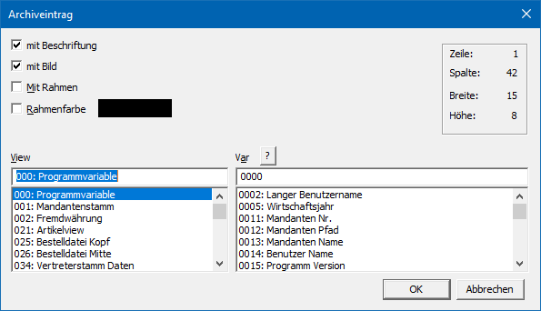

Ø Archiveintrag
Mit der Funktion "Archiveintrag" können Archiveintrage in Form eines Bilds bzw. einer Vorschau ausgegeben werden.
Hinweis
Ein Archiveintrag kann aus einem Bild und / oder einer darunterliegenden Beschreibung bestehen.
Eigenschaftsfenster "Archiveintrag"

Ø mit Beschriftung
An dieser Stelle kann definiert werden, ob der Name des Archiveintrags angezeigt werden soll.
Ø mit Bild
Durch Aktivierung dieser Option wird der Archiveintrag in Form eines Bilds bzw. einer Vorschau dargestellt.
ü SPL- und Bilddateien
Es wird
eine Vorschau des Archiveintrags in der gewählten Größe angezeigt.
ü Alle weiteren Dateitypen
Es
wird das Bild (Icon) des jeweiligen Ausführungsprogramms (wenn bekannt)
dargestellt.
Ø Mit Rahmen
Durch Aktivieren dieser Option wird ein Rahmen um den Archiveintrag gezeichnet.
Ø Rahmenfarbe
An dieser Stelle kann die Farbe der Kachel gewählt werden.
Ø View / Var
Über die Auswahllisten können die View (d.h. die SQL-Tabelle)
und die Variable (d.h. die SQL-Spalte in einer Tabelle) bestimmt werden, in
welcher sich die auszugebende Archiv-ID befindet. Mit Hilfe des Icons  kann das Fenster "Variable suchen"
geöffnet werden. In diesem ist es möglich per Volltextsuche nach Variablen zu
suchen.
kann das Fenster "Variable suchen"
geöffnet werden. In diesem ist es möglich per Volltextsuche nach Variablen zu
suchen.